重要：ウィザースホームは愛知県では建てられません。
ウィザースホーム（株式会社ウィザースホーム／新昭和グループ）は、千葉県を本拠地とする関東ローカルのハウスメーカーです。対応エリアは千葉県・山梨県全域と、茨城・埼玉・東京・神奈川の一部のみ。ARCHISTがメインとする愛知県・東海エリアは完全に対象外のため、「愛知でウィザースホームを建てたい」というリクエストには応えられません。
それでも本記事で取り上げる理由は3つ。①2×6枠組壁工法＋タイル外壁＋高断熱の代表格として比較価値が高い／②同グループのクレバリーホーム（全国FC／愛知OK）が事実上の代替候補になる／③全棟気密測定など「良いHMの指標」を学ぶ教材として有用。愛知県読者向けには「契約候補」ではなく「比較・学習用の素材」として読んでいただく前提で執筆しています。
① 会社・基本データ（新昭和グループとの関係）
ウィザースホームは、千葉県を本拠地とする新昭和グループの中核住宅ブランド。持株会社である株式会社新昭和（親会社）と、事業会社の株式会社ウィザースホームで役割が分かれており、建築実績は新昭和グループ累計で3万棟以上にのぼります。
親会社（新昭和グループ）とウィザースホーム（事業会社）の区分
| 項目 | 株式会社新昭和（親会社） | 株式会社ウィザースホーム（事業会社） |
|---|---|---|
| 設立 | 1970年（昭和45年）4月2日 | 2016年11月1日 |
| 本社 | 千葉県君津市東坂田4-3-3 | 千葉県千葉市中央区川崎町1-39 |
| 資本金 | 10億8,268万円 | 1億円 |
| 売上高（2025年3月期） | 単体 約290.87億円／グループ合算 約1,083.56億円 | 単体 約270.12億円 |
| 従業員数 | グループ全体 約2,595名（2025年4月1日時点） | 単体 約456名（2025年10月時点） |
| 建築実績 | グループ累計 30,000棟以上 | 年間建築棟数 約1,200棟（二次情報集計） |
| 事業内容 | 持株・不動産・建築・住宅販売・リフォーム・マンション事業等 | 注文住宅の設計・施工・販売、分譲住宅、リフォーム |
| 代表者 | 代表取締役会長 松田芳彦／代表取締役社長 松田芳己 | — |
対応エリア（直営はあくまで関東）
- 全域対応: 千葉県・山梨県
- 一部エリア: 茨城県・埼玉県・東京都・神奈川県
愛知県・東海エリアは直営対象外。上記はあくまでウィザースホーム単体の直営エリアで、新昭和グループのクレバリーホーム（全国FC展開）は別途、愛知県を含む全国で展開あり。
「クレバリーホーム」との関係（愛知県読者必見）
愛知県読者が混同しやすいポイントとして、「クレバリーホームはウィザースホームの兄弟ブランド」という事実があります。クレバリーホームは新昭和グループが全国FC展開する形式で、タイル外壁標準という特徴を共有しています。
| 区分 | ブランド | 展開 |
|---|---|---|
| 直営（関東限定） | ウィザースホーム | 千葉・山梨全域／茨城・埼玉・東京・神奈川の一部 |
| FC展開（全国／愛知でも可） | クレバリーホーム | 全国フランチャイズ（愛知県でも展開あり） |
「愛知でウィザースホームっぽい家を建てたい」なら、クレバリーホームが事実上の代替選択肢になります。ただし工法・断熱性能は異なるため、別記事「クレバリーホーム 徹底解説」を必ず併読してください。
一言で言うと？
「タイル外壁＋2×6＋高断熱」を関東ローカルで標準装備化し、大手HMより安く提供する中堅HM。新昭和グループの中核ブランド。
② 商品ラインナップと坪単価
公式の商品展開スタイルが特徴的
ウィザースホームは「〇〇」という商品名で商品を区切らない独特のスタイル。代わりに、以下の3軸から施主自身が仕様を決めていく形式です。
| 選び方の軸 | 内容 |
|---|---|
| 暮らし方 | スポーツ／子育て／家事ラク／ガレージ／3階建て／平屋／共働き／二世帯／アウトドア／ラグジュアリーなど11カテゴリ |
| 機能・性能 | ゼロエネルギー（ソライエ・ゼロ）／制震住宅／災害対応／IoT／全館空調（Air Feel）／空気環境など6カテゴリ |
| デザイン | エクステリア（コンテンポラリー／トラディショナル） × インテリア（モダン／クラシカル × ダークトーン／ライトトーン） |
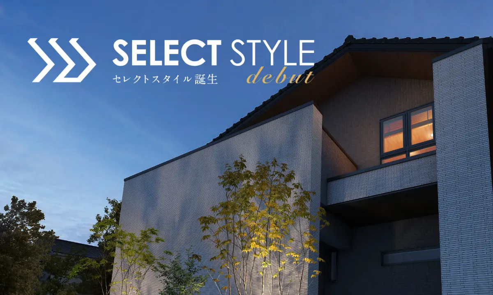
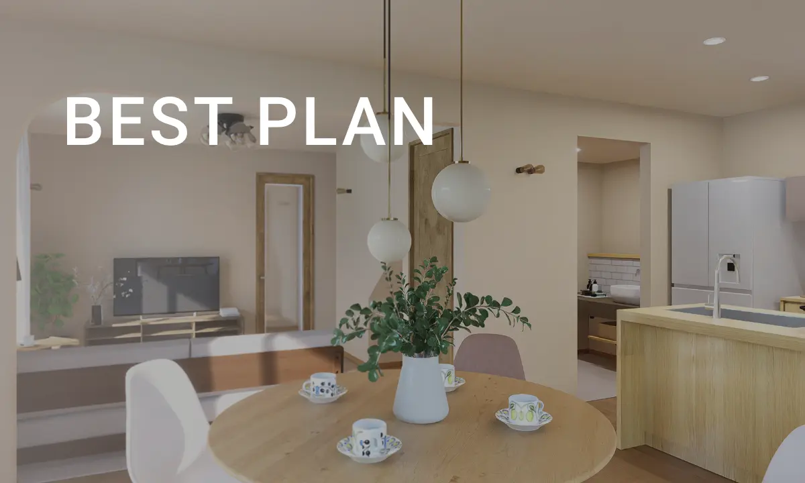
代表的なラインアップ
| ラインアップ | 位置付け | 坪単価目安（2026年） |
|---|---|---|
| 標準仕様（CO-COCHIデザイン） | 全モデル共通の基本仕様。タイル外壁・2×6・全棟気密測定 | 70〜85万円 |
| プレミアム断熱仕様 | UA値0.39／断熱等級6対応。標準的な高断熱モデル | 75〜90万円 |
| プレミアム断熱DX仕様 | UA値0.24／断熱等級7。ダブル断熱＋トリプルサッシ | 85〜100万円 |
| ソライエ・ゼロ（ZEH） | 太陽光＋高断熱のネット・ゼロ・エネルギー仕様 | 80〜95万円 |
| Air Feel（全館空調）搭載 | 全館空調込みオプション | +80〜150万円程度 |
| 制震住宅（J-ECSS / MSダンパー） | オプションで制震装置追加 | +30〜80万円程度 |
坪単価の調査値（複数メディア集計）
| 調査元 | 坪単価レンジ | 平均 |
|---|---|---|
| 不動産売却マイスター | 71〜100万円 | 約81万円 |
| HOME4U 家づくりのとびら | 70〜93万円 | — |
| THE ROOM TOUR | 49.3〜69.3万円（本体工事のみ・坪数依存） | — |
| ハウスメーカー大学 | 75〜95万円（30〜40坪） | — |
| ouchicanvas.com | 30坪2,874万円〜 | 坪単価約95.8万円 |
坪数別の本体工事費目安
| 坪数 | 本体価格レンジ |
|---|---|
| 25坪 | 1,232〜2,325万円（坪単価49〜93万円） |
| 30坪 | 1,479〜2,790万円（坪単価49〜93万円） |
| 35坪 | 1,725〜3,255万円 |
| 40坪 | 1,972〜3,720万円 |
| 50坪 | 2,464〜4,650万円 |
レンジが広い理由：標準仕様（70万円台）〜プレミアム断熱DX＋Air Feel＋制震（100万円超）まで、施主が選ぶ仕様でほぼ倍近く変わるため。平均ゾーンは80〜90万円/坪と見るのが妥当。
③ 構造・工法（2×6枠組壁工法）
2×6（ツーバイシックス）枠組壁工法
ウィザースホームの構造上の最大の特徴は、全棟2×6工法を採用している点です。
| 項目 | 内容 |
|---|---|
| 構造形式 | 枠組壁工法（北米生まれの面構造） |
| 構造材 | 2×6材（厚み38mm × 幅140mm） |
| 2×4との比較 | 2×4の壁厚89mm に対し 2×6は140mm（約1.57倍厚い） |
| 面剛性 | 壁・床・屋根の6面体モノコック構造で外力を分散 |
| 断熱材充填量 | 壁内に140mmの断熱材を充填可能（2×4の1.57倍） |
航空機や自動車のボディに使われるモノコック構造を住宅に応用。床・壁・天井の面全体で外力を受け止めるため、在来軸組工法（柱と梁で点支持）より地震・台風に強いとされます。
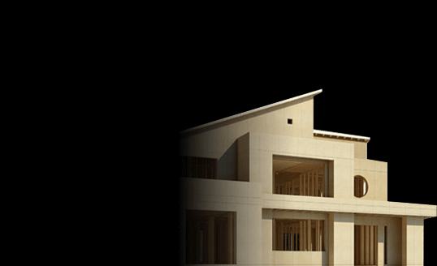
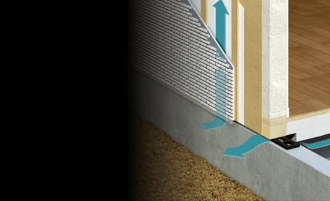
基礎工法
| 項目 | 内容 |
|---|---|
| 基礎形式 | スラブ一体ベタ基礎（幅150mm） |
| 鉄筋 | ダブル配筋（ピッチ200mm） |
| コンクリート強度 | 設計基準強度24N/mm² |
| 特徴 | 建築基準法の1.8倍以上の耐圧性能 |
シロアリ対策
- 土台材に防腐・防蟻処理加圧注入材を採用
- 木材段階での工場処理のため、現場塗布より浸透深度が深い
- ただし、床下の定期点検・10年目のメンテナンスは必須
愛知県読者向け解説：一条工務店との違い
| 項目 | ウィザースホーム | 一条工務店（i-smart） |
|---|---|---|
| 工法 | 2×6枠組壁工法 | 2×6「ツインモノコック構法」（自社名称） |
| 壁厚 | 140mm | 140mm＋外張50mm＝実質190mm |
| 工場生産率 | 一部（構造材プレカット） | 約70%以上（フィリピン工場） |
| 間取り自由度 | 比較的自由（2×6の範囲内） | 一条ルールあり（0.5マス単位） |
| 設備のオリジナル度 | 汎用設備（LIXIL等）中心 | キッチン・バス・窓まで自社製 |
同じ2×6系でも、一条は「工業化の極み」、ウィザースは「標準的な2×6＋タイル標準」というスタンスの違い。
④ 耐震性能
耐震等級
| 項目 | 内容 |
|---|---|
| 標準仕様 | 耐震等級3（最高等級／消防署・警察署と同等） |
| 2×6工法 | 面構造で地震エネルギーを分散 |
| 日本ツーバイフォー建築協会 会員 | 協会データでは過去の大震災でほぼ補修不要 |
制震装置（オプション）
ウィザースホームは2種類の制震装置をオプションで用意しています。
J-ECSS（ジェイ・エックス）
| 項目 | 内容 |
|---|---|
| 原理 | 粘弾性体の変形で地震エネルギーを熱に変換 |
| 壁倍率 | 5.0倍以上 |
| 特徴 | 耐震＋制震のハイブリッド。壁そのものが制震する |
| 繰り返し地震への強さ | 余震でも耐震強度が逓減しない |
ウィザースMSダンパー
| 項目 | 内容 |
|---|---|
| 原理 | オイルダンパー方式。粘性オイルがバルブを通過する際の抵抗で減衰 |
| 特徴 | 小さな揺れから効く。共振抑制に強い |
| 設置 | 1階・2階に複数本設置 |
大震災への実績
- 東日本大震災・熊本地震・能登半島地震を経験した新昭和グループの既築住宅で、倒壊ゼロ
- 2×6工法は阪神・淡路大震災でも被害が限定的だったことが日本ツーバイフォー建築協会の調査で報告
愛知県は南海トラフ地震のリスクが高い地域。耐震等級3＋制震装置の組み合わせは、2×6系HM（一条・ウィザース・クレバリー・スウェーデンハウス）共通のアドバンテージ。一条が「2倍耐震（耐震等級5相当）」を謳うのに対し、ウィザースは「耐震等級3＋制震装置」というアプローチで、設計思想の違いが見られる。
⑤ 断熱性能
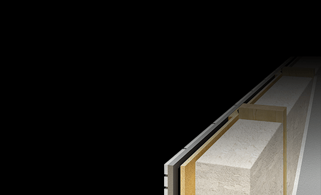
3つの断熱グレード
ウィザースホームは施主が選べる3段階の断熱グレードを用意。
| グレード | UA値 | 断熱等級 | 坪単価上乗せ |
|---|---|---|---|
| プレミアム断熱（標準） | 0.39 W/㎡K | 等級6（関東基準） | なし |
| プレミアム断熱DX | 0.24 W/㎡K | 等級7（最高） | +5〜10万円/坪 |
| ダブル断熱仕様（旧） | 0.28 W/㎡K | 等級6〜7 | — |
断熱材・構造の詳細
プレミアム断熱（標準）
| 部位 | 仕様 |
|---|---|
| 外壁 | エアロフォーム断熱（吹付硬質ウレタンフォーム）140mm充填 |
| 天井 | セルロースファイバー ブローイング工法 300mm |
| 床下 | 世界トップクラスの高性能断熱材（硬質ウレタン系） |
| 窓（サッシ） | アルミ樹脂複合 or 樹脂サッシ＋アルゴンガス入りLow-E複層ガラス |
プレミアム断熱DX
| 部位 | 仕様 |
|---|---|
| 外壁 | 壁内140mm充填＋壁外50mm 高性能フェノールフォーム外張り（ダブル断熱） |
| 合計断熱厚 | 実質190mm |
| 窓（サッシ） | 樹脂フレーム＋トリプルガラス（Low-E 2枚＋アルゴンガス） |
| 玄関ドア | 厚さ70mm・樹脂複合枠 |
外張断熱材「高性能フェノールフォーム」とは
| 項目 | 内容 |
|---|---|
| 種類 | フェノール樹脂系発泡断熱材（高性能フェノールフォーム） |
| 熱伝導率 | 0.020W/m·K（業界最高クラス） |
| 特徴 | グラスウールの約2倍の断熱性能。経年劣化が極めて少ない |
他社との断熱性能比較
| ハウスメーカー | UA値（代表値） | 断熱等級 |
|---|---|---|
| 一条工務店 i-smart | 0.25 | 等級7 |
| 一条工務店 断熱王 | 0.20以下 | 等級7 |
| ウィザースホーム プレミアム断熱DX | 0.24 | 等級7 |
| ウィザースホーム プレミアム断熱（標準） | 0.39 | 等級6 |
| スウェーデンハウス | 0.38 | 等級6 |
| クレバリーホーム（新昭和グループ） | 0.54 | 等級5 |
| 三井ホーム | 0.43 | 等級5〜6 |
| 住友林業 | 0.46 | 等級5 |
| 積水ハウス（木造） | 0.46〜0.60 | 等級5 |
| タマホーム 大安心の家 | 0.55〜0.60 | 等級4〜5 |
| ヤマト住建 | 0.28 | 等級6〜7 |
| （参考）国の省エネ基準 | 0.87 | 等級4 |
標準（0.39）でも関東基準で等級6。DXにすれば一条の断熱王に迫る0.24まで届く。コスパ的には関東で同じ断熱性能を狙うなら一条より数百万円安く済む可能性あり。
⑥ 気密性能（全棟2回測定）
C値（相当隙間面積）
| 項目 | 数値 |
|---|---|
| 全棟平均C値（公称） | 0.7 cm²/㎡以下 |
| モデルハウス実測例 | 0.18 cm²/㎡（最高記録） |
| 施主ブログ事例 | 0.2〜0.5 cm²/㎡ の報告多数 |
| 一般住宅の目安 | 1.0〜2.0 cm²/㎡ |
気密測定の特徴（業界でもレア）
| 項目 | 内容 |
|---|---|
| 全棟測定 | 全棟で実施 |
| 測定回数 | 全棟2回（中間検査＋完成時）※業界でも稀 |
| 追加料金 | なし（標準サービス） |
| 結果開示 | 測定報告書を施主に提出 |
なぜ2回測定するのか
- 中間測定（断熱・気密施工完了時）: 問題があれば壁を閉じる前に修正可能
- 完成時測定: 最終チェック。施主の実質値を確認
多くの大手HMは完成後1回のみ、もしくは希望者のみ。ウィザースの全棟2回測定は、施工品質への自信の表れとして評価されています。
他社との気密比較
| ハウスメーカー | C値 | 全棟測定 |
|---|---|---|
| 一条工務店 | 0.59（全棟平均） | 全棟1回 |
| ウィザースホーム | 0.7以下（全棟） | 全棟2回 |
| クレバリーホーム | 非公表 | 実施せず |
| 住友林業 | 非公表 | 希望者のみ |
| 積水ハウス | 非公表 | 実施せず |
| 三井ホーム | 非公表 | 希望者のみ |
| タマホーム | 非公表 | 実施せず |
C値の絶対値では一条工務店（0.59）のほうが優秀だが、測定回数では一条を上回る（一条は1回、ウィザースは2回）。「施工品質の透明性」という意味では業界トップクラス。
⑦ 換気・空調（Air Feel）
標準換気：第一種熱交換換気
| 項目 | 内容 |
|---|---|
| 方式 | 第一種（給気・排気とも機械式）＋熱交換 |
| モーター | DCモーター × 2（給気用・排気用） |
| 制御 | IAQ制御（空気質に応じて自動調整） |
| 省エネ効果 | 非熱交換型比 約61%省エネ |
| フィルター | 高性能微粒子フィルター（花粉・PM2.5対応） |
Air Feel（全館空調）
| 項目 | 内容 |
|---|---|
| 方式 | 高性能全熱交換型換気＋全館空調 |
| 仕組み | 外気を「ちょうどいい」温度にして室内供給 |
| ランニングコスト | 24時間稼働でも電気代抑制（具体値は個別条件次第） |
| 導入コスト | +80〜150万円程度 |
Air Very（上位モデル）
| 項目 | 内容 |
|---|---|
| 方式 | 空調機＋顕熱交換機を追加した上位ライン |
| 差別点 | より精緻な温湿度コントロール |
| 導入コスト | +150〜250万円程度 |
一条工務店との比較
| 項目 | ウィザース Air Feel | 一条 ロスガード90 |
|---|---|---|
| 方式 | 全館空調＋全熱交換 | 全熱交換換気（空調機能別） |
| 温度交換効率 | 非公表 | 最大90% |
| 標準 or オプション | オプション（全館空調付き） | ロスガード90は全棟標準 |
| 追加料金 | +80〜150万円 | 0円（標準装備） |
一条は「全棟標準で熱交換換気」なのに対し、ウィザースは「標準は第一種換気＋希望者に全館空調Air Feel」。標準換気の手厚さでは一条に軍配だが、Air Feelを入れれば全館空調一体型なので快適度は高い。
ソライエ・ゼロ（ZEH仕様）と太陽光
| 項目 | 内容 |
|---|---|
| ラインアップ名 | ソライエ・ゼロ |
| 定義 | ネット・ゼロ・エネルギー・ハウス |
| 断熱 | 2×6＋エアロフォーム断熱（プレミアム断熱以上） |
| 設備 | 高効率エアコン・エコキュート・LED照明標準 |
| 創エネ | 太陽光発電（屋根面積次第で5〜10kW） |
| 蓄電池 | オプション（7kWh前後） |
| 目標 | 年間一次エネルギー収支ゼロ |
⑧ デザイン・タイル外壁
外壁：タイル外壁（標準装備）
ウィザースホームの最大の特徴が、タイル外壁が標準仕様である点です。
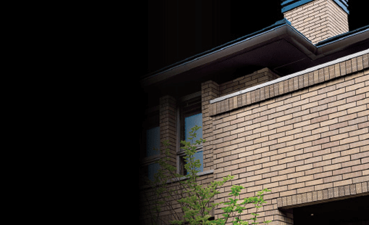
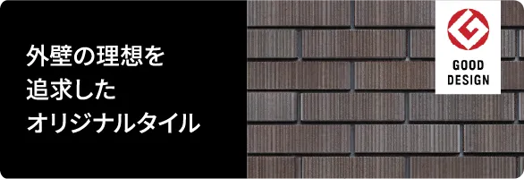
| 項目 | 内容 |
|---|---|
| 種類数 | 3カテゴリ 13種類以上のタイル |
| 標準採用タイル | ハイクオリティタイル群（追加料金なし） |
| 上位タイル | ハイグレードタイル・ハイグレードアクセントタイル（オプション） |
| メンテナンス | 塗り替え不要。10年点検のみ |
| 耐久性 | タイル自体は50年以上無劣化。目地は10〜20年で補修推奨 |
タイルの3カテゴリ
ハイグレードタイル（重厚・華麗）
- スクラッチブリックタイル：伝統的なスタイル。陰影の深い表情
- ロイヤルメキシタイル：天然石を連想させる割石デザイン
ハイクオリティタイル（標準・多彩）
- ガルボストーンタイル：豊かな陰影表情
- サモーナボーダータイル：幾何学模様・砂紋のような表情
- スプリットボーダーNEOタイル：割肌による陰影
- ハーモニーフェイスタイル：リズミカルな壁面
- アートフェイスタイル：デニム柄・サビ柄などアート表現
- パウダーフェイスタイル：繊細で優しい風合い
ハイグレードアクセントタイル（個性派）
- ウッディノーブルタイル：木肌の風合い
- グレイスフルタイル：光とともに変化する陰影
- ストーンタイプコレクション：深みのある陰影感
屋根：陶器瓦（標準装備）
| 項目 | 内容 |
|---|---|
| 標準 | 防災陶器瓦（50年メンテナンスフリー相当） |
| 色 | 複数色展開 |
| 特徴 | 塗装不要・耐久性高・遮音性良好 |
50年間のメンテナンス費用削減効果
公式サイトによれば、標準仕様（総タイル外壁＋防災陶器瓦）の場合、一般的なサイディング＋スレート屋根と比較して50年間で約400万円以上のメンテナンス費用削減が可能とされています。
内装：CO-COCHIデザイン
| 項目 | 内容 |
|---|---|
| ブランド名 | CO-COCHI（ココチ）デザイン |
| スタイル | モダン／クラシカル × ダークトーン／ライトトーン（計4パターン） |
| フローリング | 選択肢あり（シートフローリング中心） |
| 設備 | LIXIL・TOTO・Panasonic等の大手メーカー製品 |
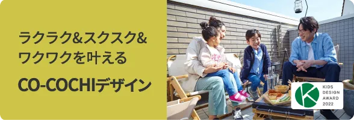
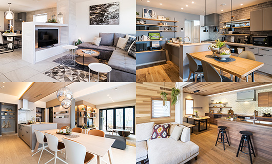
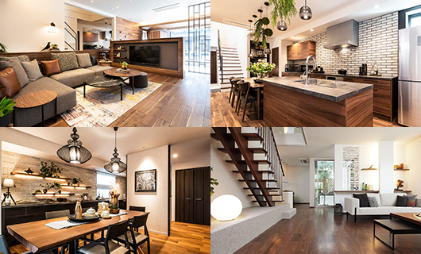
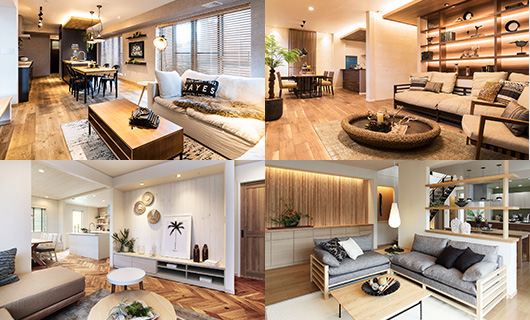
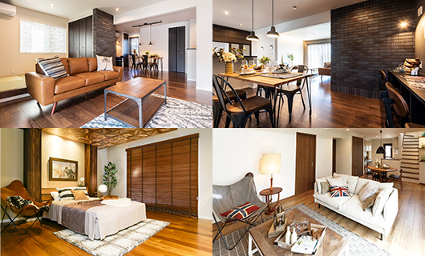
内装デザイン4パターン／出典: ウィザースホーム公式（with-e-home.com）
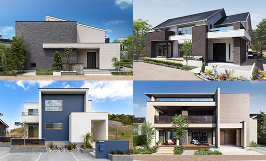
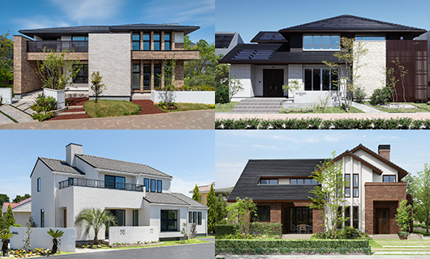
デザインの注意点
- タイル外壁は人気デザインが近所で被りやすい（選択肢が限定的）
- 内装スタイルが6パターンほどに絞られているため、個性を出しにくい
- 間取りは2×6工法の範囲内なので、大開口・ホール級の大空間は不得手
⑨ 保証・メンテナンス（半世紀サポート）
半世紀サポートシステム
ウィザースホームの保証は「30年保証＋20年サポート」＝最長50年の体系です。
保証期間の詳細
| 保証項目 | 初期保証 | 最長保証 | 延長条件 |
|---|---|---|---|
| 構造躯体 | 10年（住宅瑕疵担保履行法の新築住宅義務） | 30年（指定メンテ実施により延長） | 定期点検・指定有償メンテの実施 |
| 防水 | 10年 | 30年 | 指定メンテ実施 |
| シロアリ（防蟻） | 10年 | 30年 | 指定メンテ実施 |
| 住宅設備 | メーカー保証準拠 | 10年（延長可） | 対象: キッチン・バス・洗面・トイレ・給湯器・インターホン・換気 |
| ＋20年サポート | — | 保証終了後もさらに20年の見守りサポート | 総合50年フォロー |
公式キャッチ：「半世紀サポート」＝30年保証＋20年サポート＝最長50年。公式ページでは「構造躯体の初期保証20年」等の個別年数の明記はなく、総称として「30年保証」を打ち出している。
定期点検スケジュール
引渡し後 → 3ヶ月 → 1年 → 2年 → 5年 → 10年 → 15年 → 20年 → 25年 → 30年（以降も20年間の「サポート」が続き、最長50年間フォロー）
有償メンテナンスの内容
| 年数 | 内容 |
|---|---|
| 10年目 | 白蟻対策／バルコニー防水の再施工 |
| 20年目 | 白蟻対策／バルコニー防水／屋根材釘の打ち直し／外部シーリング／足場掛けによる外装点検 |
| 30年目 | 外壁タイルの目地補修／屋根瓦の点検・部分交換 |
24時間アフター受付
- 緊急時の24時間受付窓口あり
- 住設機器の故障・水回りトラブルに即応
他社との保証期間比較
| ハウスメーカー | 初期保証 | 最大延長 |
|---|---|---|
| 住友林業 | 30年 | 60年 |
| 積水ハウス | 30年 | 永年（建物がある限り） |
| ヘーベルハウス | 30年 | 60年 |
| ウィザースホーム | 初期10年（瑕疵担保義務）／指定メンテで30年 | 30年保証＋20年サポート（最長50年） |
| 一条工務店 | 30年 | 30年 |
| タマホーム | 10年 | 60年（条件付き） |
| クレバリーホーム（FC） | 10年 | 30年 |
最長30年保証は一条工務店と同水準。住友林業・積水ハウスの60年超と比べると短いが、中堅価格帯としては標準的。さらに保証終了後の20年サポート（見守り）を合わせた半世紀サポート＝最長50年フォローが特徴。
⑩ 建築期間
| フェーズ | 期間目安 |
|---|---|
| 展示場見学〜仮契約 | 1〜3ヶ月 |
| 仮契約〜本契約（間取り打合せ） | 3〜5ヶ月 |
| 本契約〜着工（詳細設計・確認申請） | 2〜3ヶ月 |
| 着工〜上棟 | 1〜2ヶ月 |
| 上棟〜引渡し | 3〜4ヶ月 |
| 合計（初回来場〜引渡し） | 10〜17ヶ月 |
| 着工〜引渡し | 4〜6ヶ月 |
工期の特徴
- 2×6工法は工場プレカット率が高いため、現場工期は在来工法より短め
- 1棟あたりの現場工期は4〜6ヶ月で安定
- ただし繁忙期（春〜初夏）は打合せ待ちが発生することも
工事の透明性
- 現場カメラ設置オプションあり（リアルタイム確認可能）
- 施主自身が現場に足を運んで確認することも歓迎される社風
⑪ 客層・営業攻略
典型的な施主プロファイル
| 属性 | 傾向 |
|---|---|
| 年齢 | 30〜40代が中心 |
| 世帯構成 | 共働きファミリー・子育て世代 |
| 世帯年収 | 500〜800万円がボリュームゾーン |
| エリア | 千葉県在住が約6割／茨城・神奈川・埼玉が続く |
| 価値観 | 「大手HMより安くタイル外壁＋高断熱を得たい」コスパ重視層 |
| 情報収集 | YouTube・ブログ・Instagram。展示場訪問前に下調べ |
ウィザースホームを選ぶ理由TOP3
- タイル外壁が標準（大手ではオプションで坪単価10〜30万円増が多い）
- 全棟2回の気密測定（他社では希望者のみが多い）
- 関東での地域密着感（千葉本社の親しみやすさ・レスポンスの良さ）
営業攻略：値引き文化
- 基本的に値引きはほぼなし〜小幅
- 「決算月（3月・9月）」に若干の値引きがあるケースあり
- 大幅値引きよりも、オプションサービス（10〜30万円相当）が一般的
契約のタイミング
- 仮契約金: 100万円（内訳: 設計申込金）
- 本契約前に間取り・見積もりを必ず確定させる
- 「とりあえず仮契約」を避ける（設計費の戻りが少ないため）
担当者ガチャ
施主口コミでは、営業担当者・設計担当者・現場監督の「当たり外れ」が評価を大きく左右すると指摘されています。計算ミス・仕様ミスが目立つ担当もいれば、丁寧で知識豊富な担当に当たれば満足度が非常に高くなるケースも。
対策
- 展示場で複数の担当者と会話し、相性を確認
- 合わないと感じたら担当変更を申し出る（可能）
- 大きな決断前に「他の担当者の意見も聞きたい」と伝える
見積もりの見方
- 標準仕様とオプションの区分が曖昧になりやすい
- 見積もり書の「オプション」欄を必ず逐一確認
- 仕様書ベースでの見積もり要求を（「契約後に追加費用が莫大に」という後悔事例多数）
⑫ 他社との比較表
総合比較表（ウィザース vs 主要7社）
| 比較 | ウィザース | 一条 | スウェーデン | クレバリー | 三井 | 住友林業 | タマ |
|---|---|---|---|---|---|---|---|
| 坪単価 | 70〜100 | 80〜105 | 85〜110 | 55〜80 | 80〜130 | 80〜130 | 50〜80 |
| 工法 | 2×6 | 2×6ツイン | 2×6 | 軸組SPG | 2×6 | BF構法 | 軸組 |
| UA値（標準） | 0.39 | 0.25 | 0.38 | 0.54 | 0.43 | 0.46 | 0.55〜 |
| UA値（上位） | 0.24 DX | 0.20 断熱王 | 0.35前後 | — | — | — | 0.23 |
| C値 | 0.7 全棟2回 | 0.59 全棟1回 | 非公表 | 非公表 | 非公表 | 非公表 | 非公表 |
| 外壁標準 | タイル | サイディング | 木質パネル | タイル | サイディング | 木質 | サイディング |
| 屋根標準 | 陶器瓦 | スレート | スレート | 陶器瓦 | スレート | スレート | スレート |
| 最大保証 | 30年+20年S | 30年 | 50年 | 30年 | 60年 | 60年 | 60年 |
| 愛知県展開 | × | ○ | ○ | ○ | ○ | ○ | ○ |
ウィザース vs 一条工務店（2×6系No.1比較）
| 比較軸 | ウィザースホーム | 一条工務店 |
|---|---|---|
| 断熱（標準） | UA0.39 | UA0.25 |
| 断熱（上位） | UA0.24 | UA0.20以下 |
| 気密測定 | 全棟2回 | 全棟1回 |
| 外壁標準 | タイル | サイディング |
| 全館床暖房 | オプション（Air Feel） | 標準 |
| 設備 | 汎用メーカー | 自社オリジナル |
| 間取り自由度 | ○ | △（一条ルール） |
| 坪単価 | 70〜100万 | 80〜105万 |
| 向く人 | 標準断熱で良い・タイル外観重視 | 性能最優先・全館床暖房必須 |
ウィザース vs スウェーデンハウス（2×6系デザイン比較）
| 比較軸 | ウィザースホーム | スウェーデンハウス |
|---|---|---|
| 工法 | 2×6 | 2×6 |
| 窓 | 樹脂サッシ（DXはトリプル） | 木製サッシ・トリプルガラス（標準） |
| 外壁 | タイル標準 | 木質パネル（塗装要） |
| 気密 | C値0.7（全棟2回） | 非公表 |
| デザイン | 一般的 | 北欧テイスト特化 |
| 坪単価 | 70〜100万 | 85〜110万 |
| 保証 | 30年＋20年サポート（最長50年） | 50年 |
| 向く人 | コスパ・タイル外観 | 北欧デザイン・木の質感 |
ウィザース vs クレバリーホーム（同グループ比較）
| 比較軸 | ウィザースホーム | クレバリーホーム |
|---|---|---|
| 運営 | 直営（関東のみ） | 全国FC（愛知OK） |
| 工法 | 2×6枠組壁 | 軸組＋SPG構法 |
| 外壁 | タイル標準 | タイル標準（同じ） |
| 断熱 | UA0.39（標準） | UA0.54 |
| 気密測定 | 全棟2回 | FC店による |
| 坪単価 | 70〜100万 | 55〜80万 |
| 向く人 | 関東で高品質を直営で | 愛知で安くタイル外壁が欲しい |
愛知県読者向け提言
ウィザースホームに憧れる愛知県民は、クレバリーホーム（新昭和グループFC）がほぼ同じタイル外壁の世界観を楽しめる代替候補。ただし断熱性能はクレバリーのほうが劣るため、断熱重視なら一条工務店・ヤマト住建（愛知展開あり）を検討する手もあります。
⑬ よくある後悔・失敗事例
後悔1：担当者（営業・設計・現場監督）のばらつき
- 「営業担当の計算ミスが多発。見積もりを何度も出し直しになった」
- 「設計提案がなく、こちらから要望を出さないと何も進まなかった」
- 「フローリング選択を何度も間違えたまま見積もられ続けた」
対策：展示場で複数担当者と会う／合わなければ担当変更を申し出る／契約前に全仕様を書面で確認
後悔2：契約後の追加費用で予算オーバー
- 「契約の後は追加費用が莫大。住宅ローン返済がきつい」
- 「標準仕様と思っていたものがオプション扱いで+数十万円」
- 「外構・地盤改良・カーテン・照明で合計300万円以上追加」
対策：仮契約前に詳細見積もりを要求／外構・地盤は別枠で予算確保／オプション一覧を表で整理してもらう
後悔3：間取りの制約が意外と多い
- 「2×6の構造制約で、大開口リビングが諦めになった」
- 「壁を撤去したくても構造壁で動かせない」
- 「吹抜けや階段位置の自由度が思ったより低かった」
対策：2×6工法の制約を契約前に設計士と共有／大空間希望なら鉄骨系HM（ヘーベル・積水）も検討
後悔4：外観・内装のパターンが被る
- 「近所に同じタイル色のウィザース住宅が3軒。個性が出ない」
- 「内装スタイルが6パターンしかなく、住友林業のような自由度はない」
- 「CO-COCHIデザインはおしゃれだが既視感がある」
対策：ハイグレードアクセントタイルで差別化／内装は小物・照明で個性を出す／Pinterestで他社事例も参考に
後悔5：施工品質のばらつき（クロス・建具等）
- 「クロスの下地処理が雑でポコッと浮いた箇所がある」
- 「建具の建付けが悪い部屋があった」
- 「引渡し前内覧で指摘した箇所の補修に時間がかかった」
対策：引渡し前の内覧を複数回実施／スマホで全室動画を撮影／第三者検査（ホームインスペクション）を検討
後悔6：アフターメンテナンスの対応品質
- 「アフターメンテナンス担当者の対応が遅い／愛想がない」
- 「24時間受付はあるが、実際の訪問は数日後」
- 「担当者が変わると過去の経緯を知らない」
対策：重要な修理依頼はメール＋写真で記録／担当者変更時は書面で引継ぎを依頼
後悔7：標準仕様とプレミアム断熱DXの差
- 「標準のUA0.39で十分と思って契約したが、冬の底冷えを感じる」
- 「プレミアム断熱DXにしておけばよかった。追加なら後悔しなかった」
- 「標準とDXの差額は坪+5〜10万円。30坪なら150〜300万円の差」
対策：冷暖房費の長期シミュレーションを依頼／寒冷地・北関東ならDXがほぼ必須
後悔8：全館空調Air Feelの導入判断
- 「Air Feelを入れたが想定より電気代がかかる」
- 「逆に入れなかったら個別エアコンの本数が増えた」
- 「Air Veryに上げればよかった（温湿度コントロールの差）」
対策：光熱費シミュレーションを複数パターンで要求／入居後1年の電気代データを担当者から提示してもらう
⑭ 坪数別総額と固有の注意点・まとめ・FAQ
坪数別の建築総額シミュレーション
※ プレミアム断熱（標準）仕様を基準。2026年4月時点の概算。金利1.5%・35年ローン・頭金なしで試算。土地代は含まない。
| 坪数 | 本体工事費 | 付帯・諸経費+外構 | 建築総額目安 | 月々返済額 |
|---|---|---|---|---|
| 25坪 | 約2,000万円 | 約550〜600万円 | 約2,550〜2,600万円 | 約7.8〜8.0万円 |
| 30坪 | 約2,400万円 | 約630〜730万円 | 約3,030〜3,130万円 | 約9.3〜9.6万円 |
| 35坪 | 約2,800万円 | 約760〜810万円 | 約3,560〜3,610万円 | 約10.9〜11.1万円 |
| 40坪 | 約3,200万円 | 約840〜940万円 | 約4,040〜4,140万円 | 約12.4〜12.7万円 |
| 45坪 | 約3,600万円 | 約970〜1,070万円 | 約4,570〜4,670万円 | 約14.0〜14.3万円 |
追加費用の目安
- 地盤改良が必要な場合：+50〜150万円
- プレミアム断熱DX：坪単価+5〜10万円（30坪で+150〜300万円）
- Air Feel（全館空調）：+80〜150万円
- J-ECSS or MSダンパー制震：+30〜80万円
- 太陽光10kW：+250〜350万円（年間8〜20万円の経済効果で10〜15年回収）
ウィザースホーム固有の注意点（愛知県読者向け）
最大の注意点：愛知県では建てられない
対応エリアは千葉・山梨全域／茨城・埼玉・東京・神奈川の一部。愛知県・東海エリアは完全に対象外。「ウィザースホームで建てたい」と思っても不可能。同じタイル外壁の世界観を愛知で求めるならクレバリーホーム（新昭和グループFC）が代替候補。
仮契約金の返金条件
| 項目 | 内容 |
|---|---|
| 仮契約金 | 100万円（設計申込金として） |
| 返金条件 | 設計着手前の解約なら全額返金 |
| 一部差引 | 設計着手後は設計費用が差し引かれる（数十万円の可能性） |
| 注意 | 書面で返金条件を必ず確認。口頭約束は信用しない |
標準仕様の「境界線」が曖昧
「3つの軸（暮らし方・性能・デザイン）で仕様を組み立てる」方式のため、標準仕様とオプションの境界が分かりにくいという指摘が多数。
対策
- 仮契約前に「標準仕様一覧」の書面を必ず要求
- 「これ標準ですか？オプションですか？」を全項目で確認
- 見積書の「オプション費用」を全項目分解してもらう
制震装置の選択
| 装置 | 原理 | 向く揺れ | 費用 |
|---|---|---|---|
| J-ECSS | 粘弾性体（熱変換） | 大きな揺れ・繰返し揺れ | +50〜80万円 |
| MSダンパー | オイル粘性 | 小さな揺れ・共振抑制 | +30〜50万円 |
両方併用も可能（予算次第）。南海トラフ想定の愛知県民が参考にするなら「J-ECSS：大揺れ対策／MSダンパー：繰り返し対策」と覚える。
外壁タイルの色被り問題
- 人気タイルは近所で被りやすい
- 地域密着型HMのため、同じ千葉市内で10軒同じタイルというケースも
- 差別化したいならハイグレードアクセントタイル（+費用）を選ぶ
まとめ：こんな人にウィザースホームはオススメ（関東在住の方）
- 関東（千葉・山梨・神奈川・東京・埼玉・茨城）で建てられるタイル外壁の標準装備HM
- 2×6工法の剛性と断熱性能のバランス（標準UA0.39／DX UA0.24）
- 全棟気密測定（2回実施）という施工品質の透明性
- 大手HMより安く、中堅HMより上質
- 半世紀サポート（30年保証＋20年サポート＝最長50年）
- 愛知県など関東外で建てたい → クレバリーホーム（同グループFC）または一条工務店
- 間取りの大開口・大空間を最優先したい → 積水ハウス・ヘーベルハウス（鉄骨）
- 60年超の超長期保証が欲しい → 住友林業・積水ハウス
- 業界No.1の断熱性能が必須 → 一条工務店 断熱王仕様
- 北欧デザイン・木製サッシが必須 → スウェーデンハウス
ARCHIST視点：愛知県読者にとっての本記事の活用方針
- 比較教材として：「2×6工法・タイル外壁・全棟気密測定」の代表例として参照
- クレバリーホームへの誘導：「ウィザースっぽい家が愛知でほしい」→クレバリーホーム紹介
- 一条工務店との比較軸：2×6系同士の比較で読者の理解を深める
- 標準仕様の考え方：「標準とオプションの境界をどう見極めるか」の実例